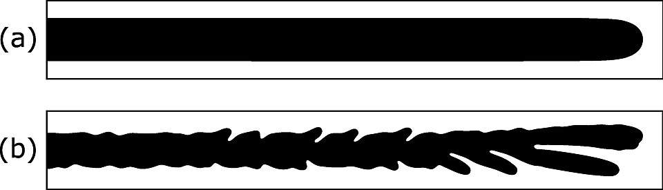

Un fluido que empuja a otro más espeso y se abre en dedos
Poné un poco de miel entre dos vidrios muy juntos y soplá aire, o empujá agua con colorante, por un agujerito en el centro. El fluido que entra no avanza como un círculo prolijo: se abre en dedos que se ramifican, como un árbol o un relámpago. Son los dedos viscosos, y aparecen cada vez que un fluido poco viscoso empuja a otro más viscoso.
El escenario clásico es la celda de Hele-Shaw: dos placas paralelas separadas por un espacio muy chico, con dos fluidos que no se mezclan entre ellas [1]. Según Jaume Casademunt, de la Universidad de Barcelona, como el espacio es tan delgado el flujo es prácticamente bidimensional, y la velocidad sigue la ley de Darcy: es proporcional a la diferencia de presión y al cuadrado de la separación entre las placas, e inversamente proporcional a la viscosidad [1]. Los apuntes de flujos viscosos del Imperial College de Londres agregan una curiosidad: este flujo muy viscoso es la manera más fácil de lograr en el laboratorio el flujo potencial bidimensional de la teoría ideal [2].
Casademunt describe el fenómeno como una inestabilidad morfológica de la superficie entre los dos fluidos, que aparece cuando uno menos viscoso empuja a uno más viscoso en condiciones de flujo de Darcy, como en un medio poroso o en una celda de Hele-Shaw [1]. Es la llamada inestabilidad de Saffman-Taylor [1]. La idea es simple: si una parte del frente se adelanta un poco, delante de ella queda menos fluido espeso que empujar, la resistencia es menor y avanza todavía más rápido. Las protuberancias crecen solas (un razonamiento a partir de la ley de Darcy).
Lo que frena a los dedos más finos es la tensión superficial, que se opone a curvar mucho la frontera. Casademunt subraya que su papel es sutil: el problema con tensión superficial y sin ella son esencialmente distintos, aunque la tensión sea muy chica [1].

El agua que se abre camino: si echás agua sobre arena seca y compacta, no se esparce en un círculo perfecto: avanza más rápido por donde encuentra menos resistencia, y esos caminos se alargan. En la celda de Hele-Shaw pasa algo parecido: cada dedo que se adelanta encuentra menos resistencia y se adelanta más.
Según Casademunt, el nombre «dedos viscosos» lo pusieron los ingenieros, que estaban interesados en la recuperación secundaria de petróleo de las rocas porosas [1]: cuando se inyecta agua en un yacimiento para empujar el petróleo, que es más viscoso, el agua tiende a abrirse paso en dedos y deja petróleo atrás (un razonamiento a partir de la inestabilidad). Los físicos, en cambio, se interesaron por el problema como un modelo de formación de patrones en una superficie [1].
El trabajo fundador, dice Casademunt, es el de Saffman y Taylor, de 1958, y por eso el problema en una celda rectangular suele llevar sus nombres [1]. Saffman y Taylor dejaron planteado además un «problema de selección»: por qué, de todas las formas posibles de dedo, se observa una sola; su comprensión completa llegó unas tres décadas después [1].
Un fluido empuja a otro: la inestabilidad de Saffman-Taylor es pariente de otras inestabilidades de superficie de esta sección, como la de Rayleigh-Taylor, donde un fluido más denso está arriba de uno más liviano. En los dos casos, una frontera plana entre dos fluidos no puede mantenerse plana, y la tensión superficial elige el tamaño de las estructuras que crecen.
Cuando un fluido poco viscoso empuja a uno más viscoso entre dos placas o en una roca porosa, el frente no avanza parejo: cada parte que se adelanta encuentra menos resistencia y se adelanta más, y el frente se abre en dedos que se ramifican. Es la inestabilidad de Saffman-Taylor, un problema práctico de la extracción de petróleo y, a la vez, uno de los modelos más estudiados de cómo la naturaleza forma patrones.
Pregunta para la comunidad: ¿Qué esperás que pase si hacés el experimento al revés, empujando la miel con agua desde afuera hacia adentro, es decir, con el fluido espeso empujando al liviano? ¿Se forman dedos?